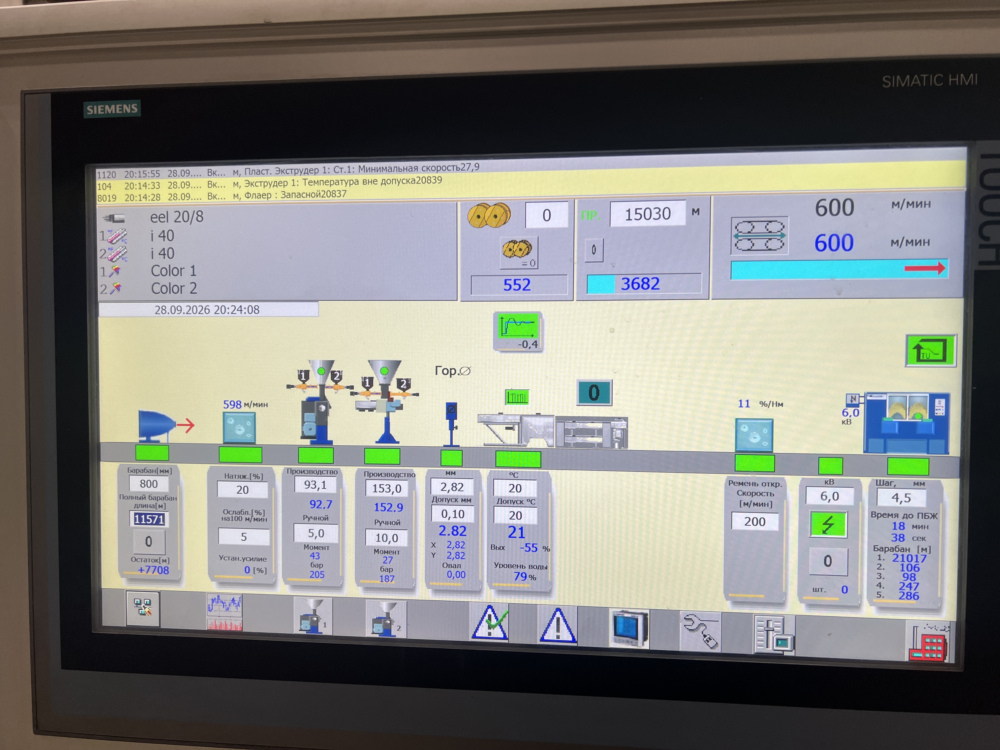

ВІД ЗАПИСУ — ДО НАЛАШТУВАННЯ
Усе для наступного барабана.
Оберіть провід. Перевірте значення. Сплануйте зміну кольору.
Поправки до плану
ОрієнтириВідстані зміни барвника залежать від продуктивності. Змініть їх за фактичним досвідом.
Для однакового кольору та останнього барабана показана замовлена довжина без поправки на зміну кольору. +30 м додається окремо лише після закінчення вхідного барабана.
Закінчився вхідний барабан?
+30Введіть поточне завдання довжини з екрана — поле, де на фото стоїть 15030.
Запас для скрутки. Запишіть показану екраном позначку пробою в картку відповідного барабана та перенесіть на ярлик.
Відкрити приклад ярлика ↗ДОСВІД ДІЛЯНКИ
Джерело є в кожного числа.
Рукописні записи — основа довідника. Друковані карти зібрані окремо для ознайомлення. Порожні й неоднозначні значення не підставляються автоматично.
Рукописні таблиці
Екран і ярлик

Головний екран лінії ↗Для екструдерів потрібне поле «Производство». «Ручной» і сині фактичні показники — інші значення.
Технологічний ярлик · метрові позначки ↗Правила зі зміни
- №1 — основа, зазвичай біла. Для жовто-зеленого — жовта.
- №2 — верхній шар і його колір. Для жовто-зеленого — зелений.
- За роботи одним екструдером барвник подається в №1.
- Барвник №2 міняють приблизно за 2000 м, №1 — за 300 м. Це початкові орієнтири.
- У ванні 150 м кабелю. Додаткові 1000 м відкладають автоматичне перекидання; це не замовлена довжина.
- Після закінчення вхідного барабана: поточне завдання +30 м і запис позначки пробою.
Як читати значення
- д — дорн; м — матриця; φ — переріз у мм².
- 1 / 2 — значення «Производство» екструдерів.
- V / шв — максимальна швидкість із запису.
- Сікора №1 — діаметр дроту; №2 — записане значення зовнішнього діаметра. «Матриця +0,15» показується поруч як приблизний орієнтир.
- Оберти шнеків із друкованих карт не підставляються в «Производство».